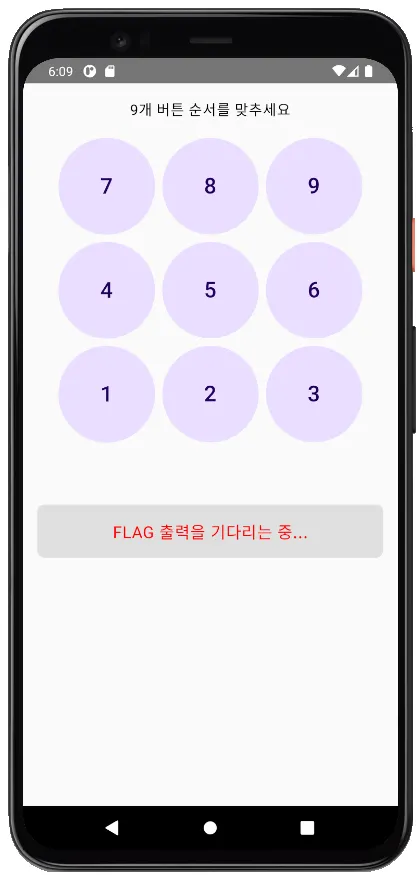
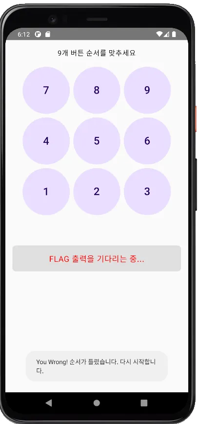
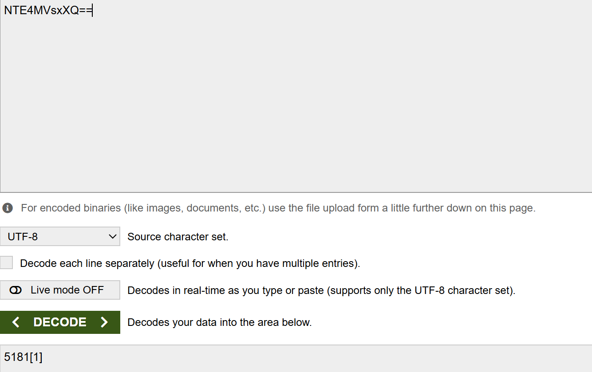
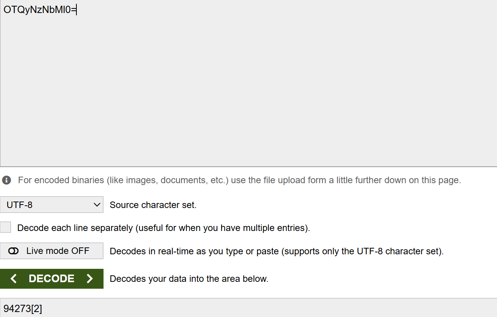
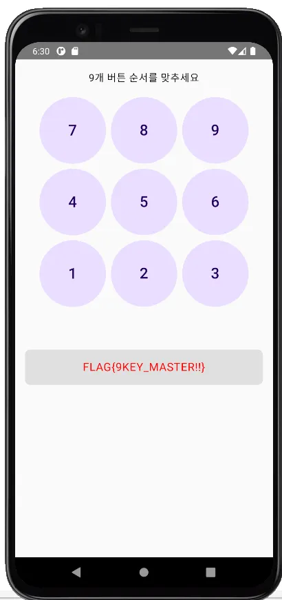

이번 주차에는 워게임을 제작한 다음에 조원들끼리 워게임을 공유하여
풀어보는 시간을 가졌다.
이 블로그에서는 나의 워게임에 대해서만 공유하고자 한다.
Wargame
내가 만든 워게임은 넘버 패드에서
특정한 순서대로 숫자 9개를 입력하면 플래그를 출력하는 워게임이다.

순서를 틀리면 처음부터 다시 숫자를 눌러야 한다.

문제를 풀기 위해 사용한 툴과 AVD 환경은 다음과 같다.
툴 : JADX
AVD : Android 11.0 (API 30) 인 Pixel 4 XL
Write-Up
특정한 순서대로 숫자를 눌러야 하기 때문에
순서를 찾으면 플래그를 찾을 수 있다.
JADX 로 .apk 파일을 분석해보면 MainActivityKt 에다음과 같은 코드가 보인다.
private static final String SEQUENCE_PART1_ENCODED_MARKED = "NTE4MVsxXQ==";
private static final String SEQUENCE_PART2_ENCODED_MARKED = "OTQyNzNbMl0=";
SEQUENCE 라는 단어를 보아 이것이 순서와 관련된 문자열임을 알 수 있다.
그리고 다음은 getDecodedSequence 함수의 일부분이다.
byte[] decodedBytes1 = Base64.decode(SEQUENCE_PART1_ENCODED_MARKED, 0);
byte[] decodedBytes2 = Base64.decode(SEQUENCE_PART2_ENCODED_MARKED, 0);
여기서 각 문자열은 Base64로 인코딩되어서 이 함수에서 Base64로 디코딩을 함을 알 수 있다.
따라서 원래의 문자열을 알기 위해서는
2개의 문자열을 Base64로 디코딩을 하면 된다.
다음은 Base64 로 인코딩과 디코딩을 할 수 있는 사이트의 주소이다.
Base64 Encode and Decode - Online
Encode to Base64 format or decode from it with various advanced options. Our site has an easy to use online tool to convert your data.
www.base64encode.org
디코딩을 하면 다음과 같은 2개의 문자열을 볼 수 있다.
 
5181[1] 과 94273[2] 이다.
우리가 입력해야 할 숫자는 9개이니 [1] 과 [2] 는 순서라는 것을 알 수 있다.
따라서 518194273 의 순서로 버튼을 누르면 플래그가 출력된다.

프로젝트 후기
프로젝트를 통해서 모바일 애플리케이션을 분석하기 위해서
무엇이 필요하고, 무엇을 해야 이해를 할 수 있는지를 배웠다.
기존에는 단순히 IDA 를 통해서 소스 코드를 분석할 줄만 알았는데
JADX 를 사용하여 모바일 분석 능력을 키울 수 있어서 좋았다.
이번에 워게임을 처음 제작하게 되었는데
제작자의 관점에서 워게임을 만들고 풀어보니
색다른 경험이었다.
워게임을 풀어볼 때 제작자의 관점을 생각하여
풀어보는 것도 괜찮을 것 같다.
제일 좋은 것은
8주차가 걸린 프로젝트를 성공적으로 마무리하였다는 것이다.